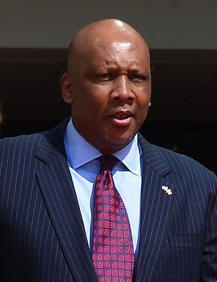
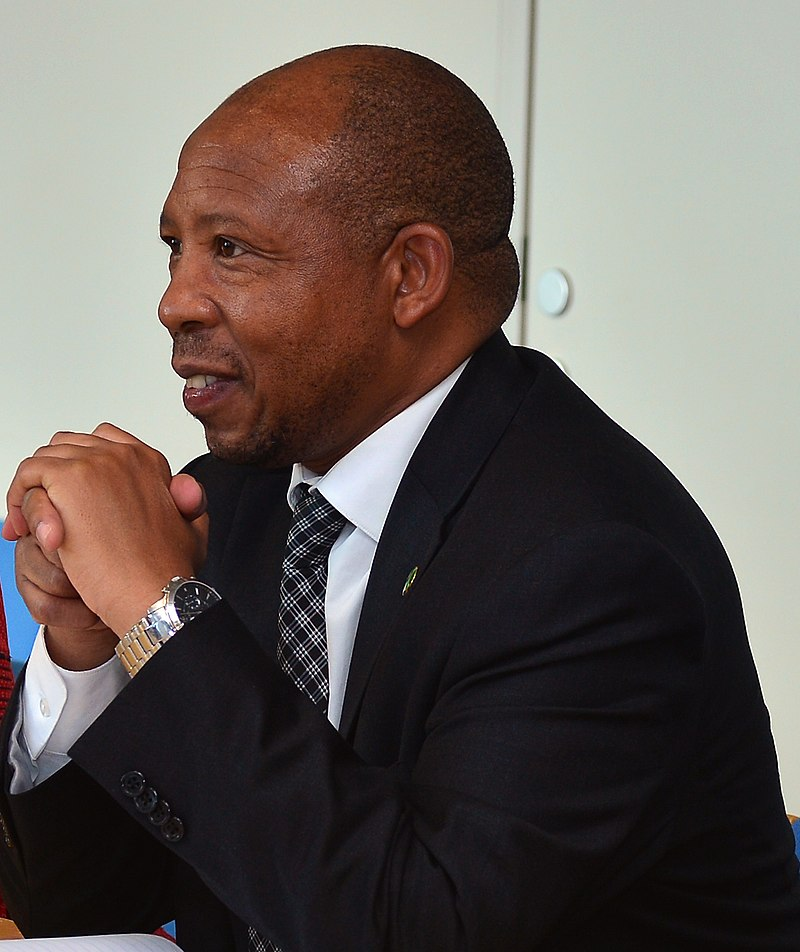
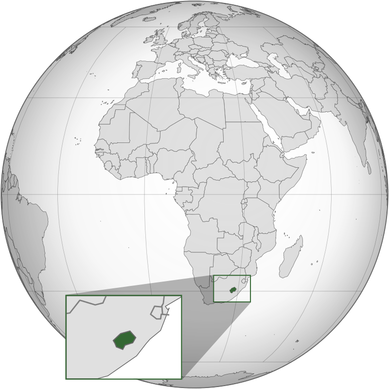
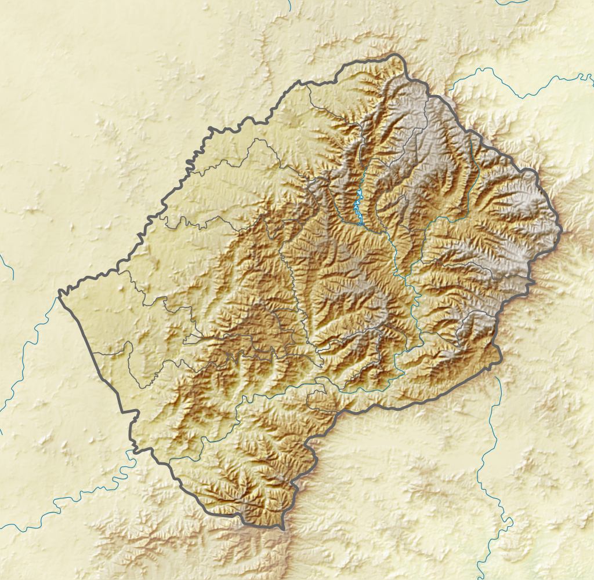
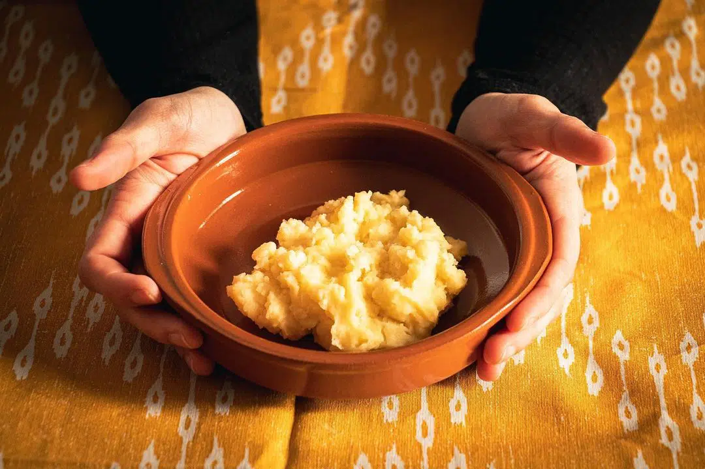
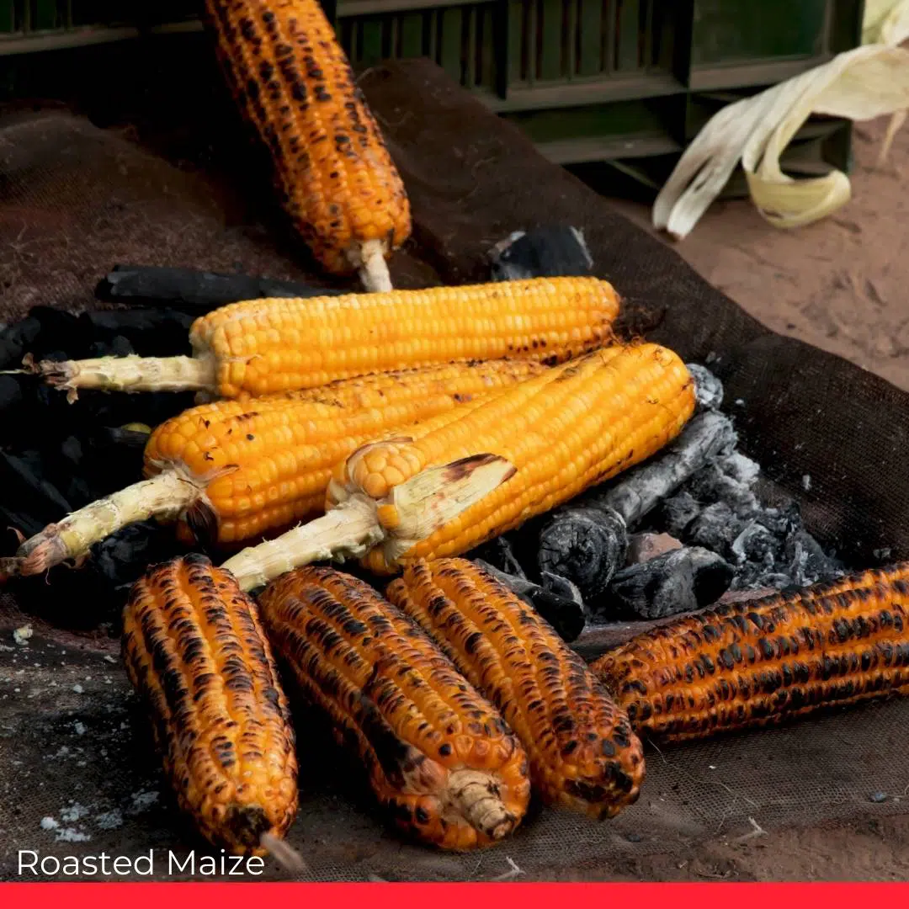
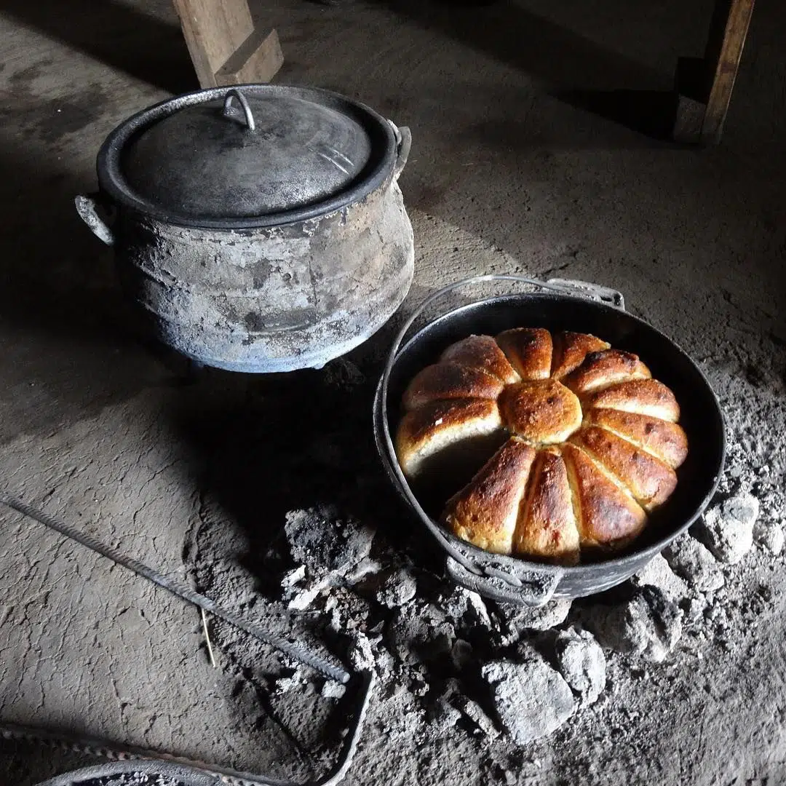
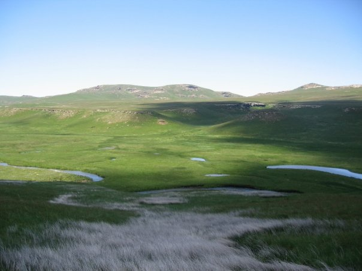
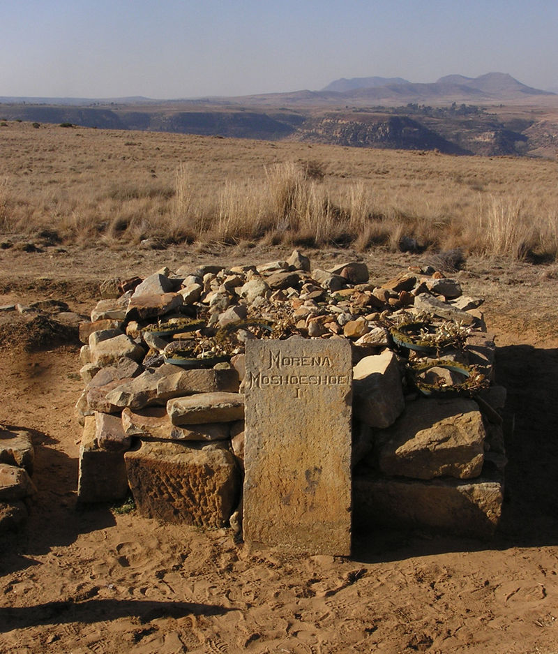

Lesotho
レソト王国（ソト語: Mmuso wa Lesotho、英語: Kingdom of Lesotho）
通称レソトは、アフリカ南部に位置する立憲君主制国家。イギリス連邦加盟国のひとつ。
周囲を南アフリカ共和国に囲まれた世界最南の内陸国で、首都はマセルである。
1966年にイギリスから独立した。非同盟中立を宣言している。
歴史
- 独立前
- 独立後
現在のレソトの地域はサン族（ブッシュマン）の居住地だったが、16世紀に入るとバントゥー系ソト族が北方より移動してきてサン族を駆逐し、この地を支配した。
～
1903年には民族協議会が設立され、1960年には自治が認められた。この時期にはバストランド国民党やバストランド会議党といった政党も設立されるようになり、1965年に行われた独立準備選挙で勝利した国民党が組閣を行った。
1966年10月4日にバストランドはイギリス連邦の一員としてイギリスから独立し、レソト王国を建国した。国王モショエショエ2世は立憲君主となり、首相にはバストランド国民党のレアブア・ジョナサンが就任した。
～
その後、2015年の選挙でレソト民主会議と民主会議が勝利しモシシリが再び首相に就任したが、2017年の選挙では全バソト会議が勝利してタバネがふたたび首相となった。
政治
-

国王
Letsie III
-

首相
Moeketsi Majoro
レソトの政治は、議会代表の民主的憲法君主制の枠組みの中で行われ、レソトの首相は政府の長であり、複数政党制です。
行政権は政府によって行使されます。立法権は、政府と議会の2つの議会、上院と国会の両方に付与されています。 司法府は、行政および立法府から独立しています。
地理
- 地形
-

レソトの位置
アフリカ南部に位置する。
-

レソトの地形
山岳地帯の内陸国である。
- 気候
レソトは周囲を南アフリカ共和国に囲まれた内陸国である。 いったん周囲の南アフリカ共和国を経由しないと行き来できない地域すらあるため、「アフリカのスイス（元は山々に囲まれて、景色の良い意味で呼ばれた）」「南部アフリカの屋根」ともいわれている。
レソトは地形とは異なり、気候には恵まれている。 全土がケッペンの気候区分による温暖湿潤気候 (Cfa) と西岸海洋性気候 (Cfb) であり、イタリア北部に似ている。雨季は存在しないものの、10月から4月にかけての夏季に降雨が多く、冬季は乾燥している。 年間降水量は国土全体の平均で700mm程度であるが、山地では1900mmに達する。気温は特に高地では低く、冬季には積雪も見られる。 植生は樹木が少なく、ほとんどが草原によって覆われている。
文化
- 食文化
-

Papa (Stiff Porridge)
パパはレソトの主食であり、ほとんどすべての家庭で楽しんでいる。
-

Roasted Maize
これは、バソトで最も楽しんだスナックの1つだ。
-

Bohobe (Bread)
レソトで楽しむパンには、主にレケベカオネ（蒸しパン）と焼きたてのパンの2種類がある。
- 世界遺産
-

セアラバセベ国立公園
-

タバ・ボシウのモシェシェ1世の墓
レソトの民族衣装としては、バソト・ハット（ソト語ではモコロトロ）と呼ばれる円錐形の麦わら帽子と、防寒のために身にまとうブランケットが特徴的である。 なかでもバソト・ハットは国の象徴とされ、1966年から1987年までの初代レソト国旗および、2006年から使用されている現行国旗においてこの帽子があしらわれている。
文化遺産や自然遺産は存在しない。世界遺産としては、複合遺産が1件存在する。 南東部のセアラバセベ国立公園は、南アフリカのウクハランバ・ドラケンスバーグ公園と共同で、マロティ＝ドラケンスバーグ公園として2013年に世界遺産に登録された。